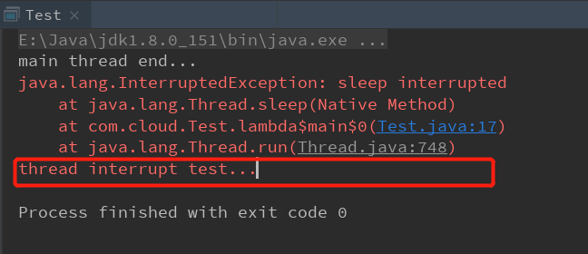

Java中的线程有六种状态，使用线程Thread内的枚举类来实现，如下，我对每个状态都进行了一定的解释。
public enum State {
/** 表示一个线程还没启用（即未调用start方法）*/
NEW,
/**
* JVM中执行的线程都是处于这个状态的，但是处于这个状态不一定在JVM中执行，
* 也就是说，只有这个状态有资格被JVM调度从而获得时间片执行。
*/
RUNNABLE,
/**
* 线程在等待获取锁资源从而进入阻塞状态，
* 在这个状态中，其一直监视锁的动态，随时准备抢占锁
* 若获得锁资源，重新进入RUNNABLE状态
*/
BLOCKED,
/**
* 当调用Object.wait、Thread.join或者LockSupport类的park方法的时候，线程进入此状态，
* 该状态若无其他线程主动唤醒，则无期限的等待。
* 唤醒的方法包括：Object.notify（唤醒随机一个）、Object.notifyAll（唤醒全部线程），
* 被唤醒的线程重新进入RUNNABLE状态
*/
WAITING,
/**
* 同WAITING状态，不过不同的是调用的方法加上了时间的限制，
* 例如：Object.wait(10)、Thread.sleep(10)、Thread.join(10)、LockSupport.parkNanos(10)、LockSupport.parkUntil(10)这些方法
* 唤醒的方法有两种：
* 1、时间过期。
* 2、其他线程调用了notify或者notifyAll
* 唤醒之后同样进入RUNNABLE状态
*/
TIMED_WAITING,
/** 线程的终点（正常死亡或者被终止）*/
TERMINATED;
}除了NEW和TERMINATED之外，其他的状态都是可以相互转换的，其转换过程如下图所示
这里特别讲一下RUNNABLE状态，在这个状态中线程并不一定在执行程序，只有被JVM调度的线程才能获得执行的时间片，并且只有这个状态的线程才能够获得时间片，换句话说，被JVM调度并且获得时间片是只属于处于RUNNABLE状态线程的权利。为了便于理解，可以将RUNNABLE分成Runnable和Running两个状态（当然，你也可以换成其他的，这里我只是自己好理解），那么上面的线程转换图就转变成了下面这样（参考《Java并发编程的艺术》中的线程状态图）：
关于线程状态转换的例子，可以通过下面的代码加深理解
public class Test {
public static void main(String[] args) {
Test test = new Test();
// 1.NEW状态
Thread thread = new Thread(() -> {
// 3.进行test对象锁的争夺，若抢到锁则继续执行，否则进入BLOCKED状态监控该锁，重新获得后进入RUNNABLE
synchronized (test) {
try {
// 4.进入TIMED_WAITING状态，100ms后重新进入RUNNABLE状态争夺时间片
Thread.sleep(100);
// 5.重新获得时间片之后，进入WAITING状态
test.wait();
} catch (InterruptedException e) {
e.printStackTrace();
}
}
// 6.正常run()方法执行完毕后线程结束，进入TERMINATED
});
// 2.调用start()方法，线程进入RUNNABLE状态
thread.start();
}
}
注：代码执行的顺序为注释的序号在上面的例子中我们看到线程的run方法正常执行完毕之后线程就正常死亡进入TERMINATED状态了，那么如果我们有中途停止线程的需求，我们应该如何正确的结束一个线程呢？
public static void main(String[] args) {
Thread thread = new Thread(() -> {
try {
Thread.sleep(1);
} catch (InterruptedException e) {
e.printStackTrace();
// 这里的return是必须的，原因后面说明
return;
}
System.err.println("thread interrupt test...");
});
thread.start();
thread.interrupt();
System.out.println("main thread end...");
}
// 结果图：异常后面的语句不会打印
这里关于线程中的打断标识变量（之后以interrupt称）需要说明的是，在特定的情况下其状态会被重置。
1、线程内部在catch了异常了之后interrupt的状态会被重置为false。
2、线程调用了Thread.interrupted()方法之后，interrupt的状态会被重置为false。如果需要判断线程是否中断的话可以使用对象方法isInterrupted()，此方法不会重置。
所以在刚才的代码中需要加入return来结束线程，否则的话线程还是会继续往下执行，如下图

使用isInterrupted()实现：
public static void main(String[] args) throws InterruptedException {
Thread thread = new Thread(() -> {
while (!Thread.currentThread().isInterrupted()) {
int k = 0;
while (k++ < 10) {
System.out.println("do something..." + k);
}
}
System.err.println("thread end...");
});
thread.start();
Thread.sleep(1);
// 主线程流程执行完了，需要停止线程
thread.interrupt();
}
public class Test {
public static volatile boolean interrupted = false;
public static void main(String[] args) throws InterruptedException {
Thread thread = new Thread(() -> {
while (!interrupted) {
int k = 0;
while (k++ < 10) {
if (interrupted) {
System.err.println("thread invoke end....");
return;
}
System.out.println("do something..." + k);
}
}
System.err.println("thread end...");
});
thread.start();
Thread.sleep(1);
// 主线程流程执行完了，需要停止线程
interrupted = true;
}
}
// 结果图
在线程提供的方法中还有一个方法可以强制关闭线程——stop()。这个方法可以说是相当的霸道，给人一种“我不管，我就是要你现在立刻死亡（指线程）”的感觉，并且其还会释放线程所有的锁资源，这样可能会导致出现数据不一致从而出现线程不安全的情况，如下面例子。
public class Test {
public static volatile boolean flag = false;
public int state = 0;
public static void main(String[] args) throws InterruptedException {
Test test = new Test();
Thread thread = new Thread(() -> {
synchronized (test) {
try {
test.state = 1;
Thread.sleep(100);
if (flag) {
test.state = 2;
}
System.err.println("thread execute finished...");
} catch (InterruptedException e) {
e.printStackTrace();
}
}
});
thread.start();
Thread.sleep(1);
thread.stop();
flag = true;
System.out.println("state状态：" + test.state);
}
}
// 在这段代码中，进入线程时默认将state赋为1，接着过一段时间后如果触发了特定条件则把state赋为2，但是在特定条件触发之前，线程就被终止掉了，这个特定条件虽然符合但却没办法执行，从而导致数据的不一致。
// 结果图
所以，我们应该采用上面两种正确的方式而不是stop()来中止线程。此外，stop()方法若在线程start()之前执行，那么在线程启动的时候就会立即死亡。
若有不对之处，望各位不吝指教（反正免费，对吧）。